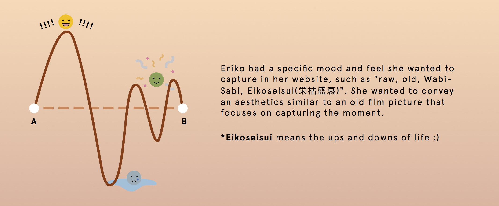
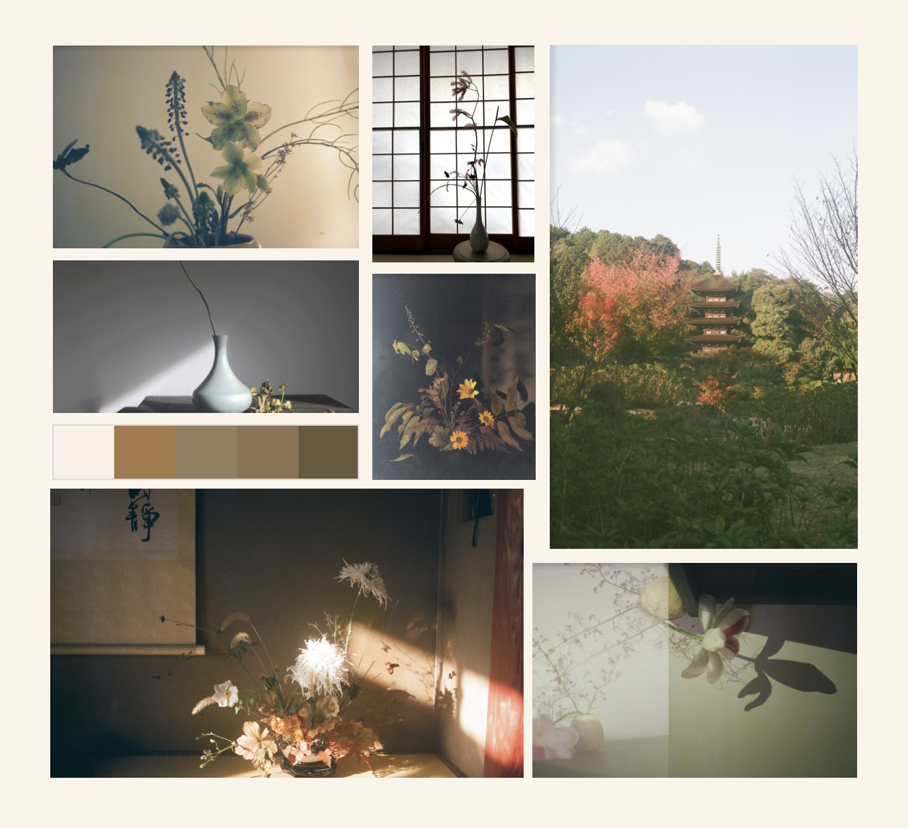

Eriko Semitsu Collection
Site Design & Development
freelance client project
(3 weeks, summer 2018)
Eriko Semitsu is an award-winning floral designer based in Vancouver. I met her when I first joined Celsia Floral in 2016, and followed closely in her footsteps as a mentee in learning floral design.
For some time now, Eriko has been wanting to have a website to display her work and thoughts, which provided me the perfect opportunity to create a personal website for her!
Introduction
Personal project.
Role
Project lead, site design, site development
Client
Eriko Semitsu
Year
2018
Discovery
The exploration.
Because the primary goal of this website was more of a personal collection, I decided not to go forward with research or following business goals.
Thus, we had several coffee chats about what kind of content she wanted to include on her site, which included: home page, gallery, thoughts page and an about page.
Creation
Design stuff.
There was no logo design needed as Eriko was not aiming to create a brand.
I asked Eriko to think of several ideas for a potential favicon logo, and she decided on a grey version of the Japanese flag.
In addition, we came up with a moodboard to direct the feel and overall design of her site.
Our primary focus for this site was focused on desktop development, but this time I remembered to develop from mobile first as the majority of her audience came from Instagram.
Wireframe design was very simple, a navigation bar on top of all pages and all images/texts laid out in a vertical order. Thus, I just stuck to displaying all images and text boxes in uniform sizes and setting it center for all mobile pages.

Development
I decided to hard code the website because I thought it would be easier to maintain and change than having to introduce Wordpress and its content management system to Eriko. As well, she wanted to learn some coding herself, meaning she could maintain the site herself afterwards.
As the sole project creator, I had full control over what I wanted to create. Beginning with a mobile first approach, I followed the approved wireframe designs and made it responsive over a collective time of 3 weeks.
Deliverables
Finally, the live website was finished! :)
Reflections
I think the biggest issue was deciding on the design and function of the website, which actually matured from a youthful and bright design to the current dark and moody one.
The original moodboard for this website looked something liked this!

Other than that, Eriko was a very understanding and easy-going friend to work with! This was a fun development project for me over the summer :) and gave me insights into what it would like to be a freelance web designer.
Thanks for reading!
Other projects
A client project made for a Vancouver fitness trainer
Design of a task manager + scheduling app with use of AI
secret secret actually idk yet